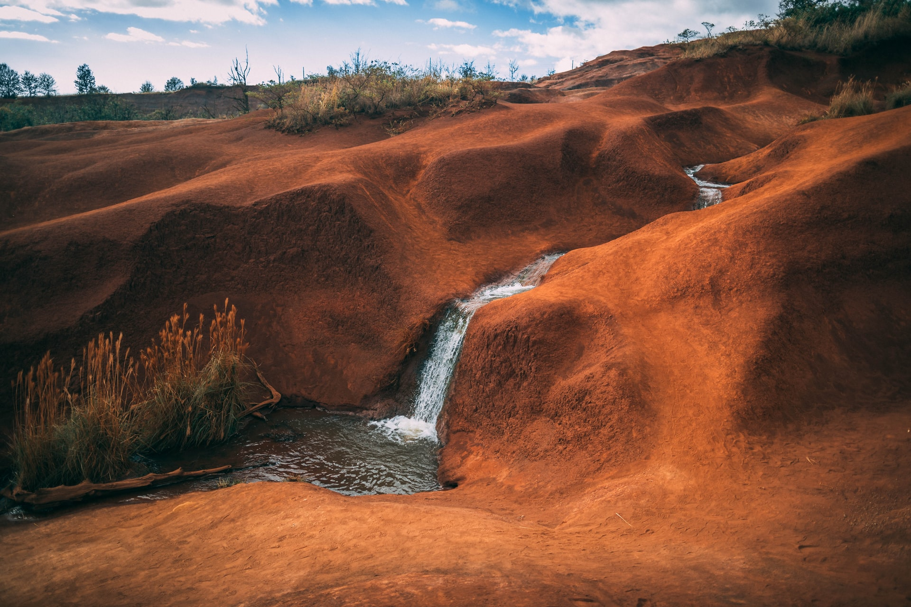
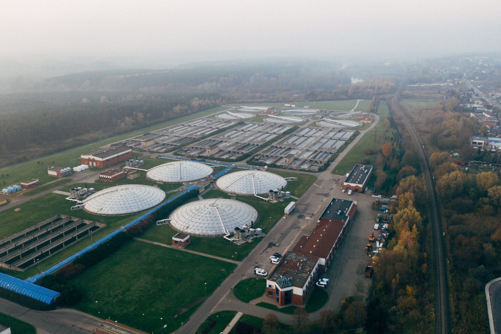
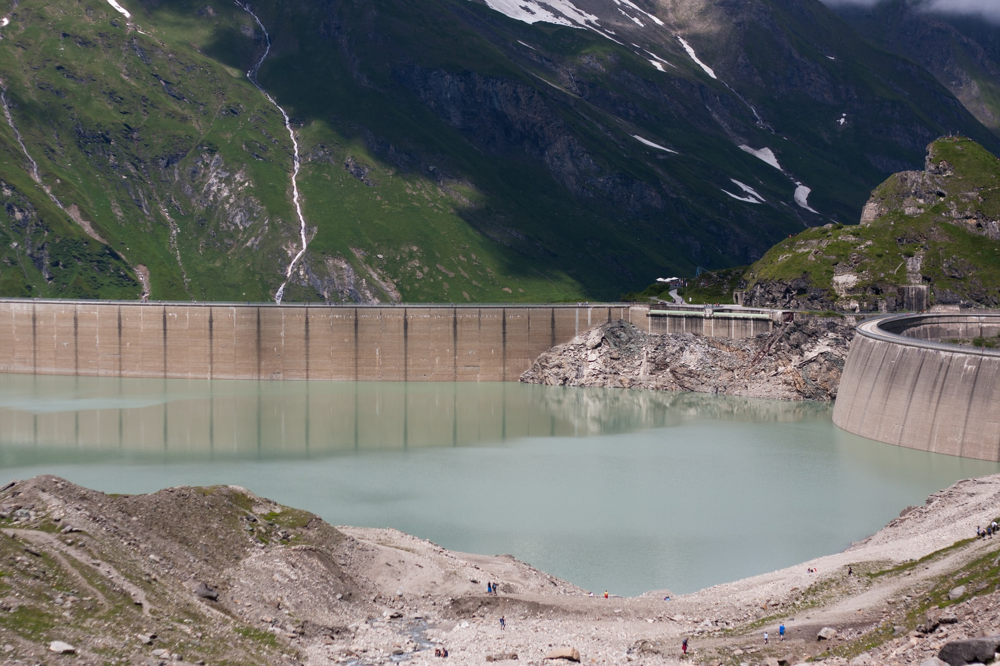

Water and Sanitation
At least 892 million people continue to practice open defecation
Know how to helpFacts
- 1 in 4 health care facilities lacks basic water services.
- Half of the world’s population is already experiencing severe water scarcity at least one month a year
- 785 million people remain without even basic drink water services.
- 2 billion people live in countries experiencing hight water stress.
- 2.4 billion people lack access to basic sanitation services, such as toilets or latrines.
- 2 out 5 people worldwide do not have a basic handwashing facility with soap and water ate home.
This info is provided by United Nations.
Most affected areas

How to Help
Here you can find different entities and communities that you can join as volunteer to help on this fight against poverty.
GoAbroad
Has as mission change lives through meaningful travel, one destination and one experience at a time.
Offers more than 200 volunteer opportunities to water projects.
Water for people
Water For People was built by volunteers, and everything they do comes from the belief that everyone should have access to clean water and sanitation services.
Their work allowed that 468 thousand people reached with sanitation services.
Volunteer World
Volunteer World is the World's leading comparison platform for volunteer abroad programs.
Offers a lot volunteer opportunities to ensure availability and sustainable management of water and sanitation for all.